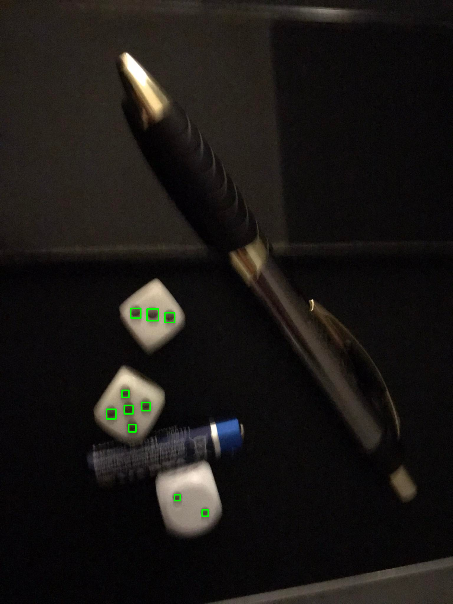

Wykrywanie liczby oczek na kostkach
Jakub Dwornik, 145412
Jakub Garus, 145241
Zadanie polegało na implementacji programu rozpoznającego i zliczającego liczbę oczek na zdjęciu prezentującym kostki do gry. W trakcie pracy korzystaliśmy z samodzielnie wykonanych 38 zdjęć kostek, przez co w łatwy sposób mogliśmy manipulować oświetleniem, aranżacją tła czy dystansem między aparatem, a kostkami. Dzięki znajomości kolejności występowania zdjęć, mogliśmy sporządzić listę zawierającą prawidłową ilość oczek na każdym zdjęciu. Na jej podstawie obliczamy końcową skuteczność metody. W implementacji wszelkich rozwiązań posługiwaliśmy się funkcjonalnością biblioteki OpenCV.
Początkowo w celu wykrycia wszystkich oczek na zdjęciu, użyliśmy transformacji Hougha, tj. metody pozwalającej na wyodrębnienie regularnych kształtów. Choć oryginalnie metoda służyła jedynie do lokalizacji prostych, później została rozbudowana tak, aby radzić sobie również z innymi kształtami np. okręgami. Skuteczność tego podejścia była bardzo niska. Dodatkowo rozwiązanie to obarczone jest wysoką złożonością obliczeniową, w związku z czym zdecydowaliśmy się zmienić metodę.
Drugie podejście bazowało na detekcji blobów, czyli zbitków pikseli posiadających te same właściwości. Przed użyciem właściwego algorytmu zdjęcia zostały delikatnie rozmazane, gdyż niweluje to ewentualny szum. W trakcie działania algorytm przechodzi przez kilka etapów. Pierwszym z nich jest progowanie, mające na celu pozyskanie wielu obrazów binarnych, różniących się progiem jasności. Następnie metoda ta grupuje fragmenty składające się wyłącznie z białych pikseli oraz scala te, których środki znajdują się odpowiednio blisko siebie. W dalszej części obliczany jest promień i położenie nowego środka blobu. Algorytm można dostosowywać do własnych potrzeb za pomocą parametrów definiujących kolor, kolistość, wypukłość oraz wartość określająca jak bardzo fragment pikseli jest wydłużony. Początkowo wartości odbieraliśmy samodzielnie, lecz ze względu na dużą ilość możliwych parametrów zdecydowaliśmy się na automatyczne znalezienie tych najbardziej optymalnych.
Po sprawdzeniu wielu wariantów najlepszym zestawem okazał się:
params.minThreshold = 0;
params.maxThreshold = 255;
params.blobColor = 0
params.minCircularity = 0.839
params.minConvexity = 0.97
params.minInertiaRatio = 0.63,
co wpłynęło na wzrost skuteczności z 76,32% do 81,58%.
Algorytm działa bezbłędnie dla większości zdjęć, włącznie z obrazami posiadającymi wiele elementów lub silnie rozmytymi:
Zdarzały się zdjęcia problematyczne np. tutaj program interpretuje plamkę na kostce, jako siódme oczko. Na zdjęciu obok algorytm nie dostrzega jednej kostki, ze względu na wysoką jasność:
Prezentacja macierzy pomyłek:
Stan faktyczny | |||||||
Wynik algorytmu | 1. | 2. | 3. | 4. | 5. | 6. | |
0. | 1 | ||||||
1. | 11 | 8 | |||||
2. | 16 | 1 | |||||
3. | 18 | ||||||
4. | 15 | ||||||
5. | 15 | ||||||
6. | 12 | ||||||
7. | 1 | ||||||
Następnym etapem było odpowiednie pogrupowanie oczek na poszczególnych kostkach w taki sposób, aby wiadomo było na której kostce jest ile oczek. Początkowo efekt ten próbowaliśmy osiągnąć przytoczoną wcześniej metodą wykrywania blobów. Intuicyjnie wydawało się, że skoro metoda ta daje dobre efekty z małymi, czarnymi oczkami to nie będzie miała problemów z wykrywaniem dużych, białych kostek. W praktyce, okazało się, że wykrywanie kostek tą metodą jest znacznie trudniejsze niż w przypadku oczek. Długie dostrajanie parametrów nie przynosiło postępów a efekty nie były satysfakcjonujące skutkiem czego zdecydowaliśmy, że konieczna jest zmiana podejścia.
Obiecującą metodą wydawał się być algorytm K-średnich. Jego zadaniem jest separacja próbek na rozłączne klastry. Działanie algorytmu opiera się na przenoszeniu obiektów pomiędzy klastrami, tak długo aż osiągniemy maksymalne podobieństwo w ramach jednego skupienia oraz największą różnorodność pomiędzy zbiorami.
Prezentacja wyników działania metody:
Spośród wszystkich 31 zdjęć, na których poprawnie zlokalizowano oczka, 10 odznaczyło się błędnym rezultatem, co daje skuteczność na poziomie 68%. Przykładowe niepoprawnie pogrupowane zdjęcia:
Ostatnia zmiana dotyczyła sposobu przydzielania oczek do konkretnych kostek. Przetestowaliśmy kilka algorytmów: aglomeracyjny, OPTICS oraz DBSCAN. Metodę K-średnich zamieniliśmy na algorytm DBSCAN, gdyż okazał się najbardziej dokładny. Jest on przedstawicielem algorytmów grupowania gęstościowego polegającego na tworzeniu większych fragmentów, skupisk. Metoda bazuje na wiedzy o zagęszczeniu, czyli odległościach dzielących obserwacje w konkretnym obszarze. Głównym parametrem sterowania algorytmem jest epsilon, oznaczający maksymalny dystans między obserwacjami, zezwalający na oznaczenie ich jako sąsiadów. W naszym programie argument eps ustawiony jest na wartość 125.
Stosując ten algorytm błędnie zgrupowano oczka na jedynie 5 zdjęciach, a zatem osiągnęliśmy skuteczność na poziomie 84%. Poniżej, zdjęcie po prawej stronie obrazuje przypadek, z którym metoda K-średnich nie mogła sobie poradzić.
Prezentacja wyników działania metody:
Błędne przypadki:
Obie metody mają dużą trudność w grupowaniu kostek z dwoma, oddalonymi od siebie oczkami. DBSCAN cechuje się wysoką odpornością na niepożądany wpływ wartości odstających oraz zadowalającą dokładnością przy zachowaniu względnej szybkości działania. Wadą tego podejścia jest brak możliwości uprzedniego zdefiniowania ilości skupisk, tak jak miało to miejsce w metodzie K-średnich.